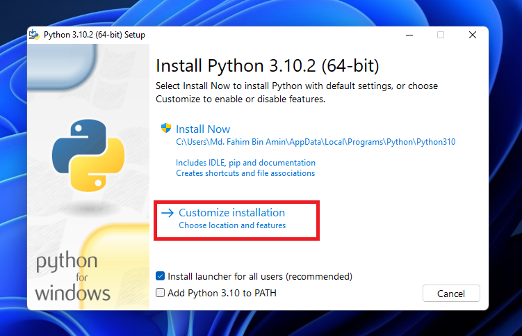
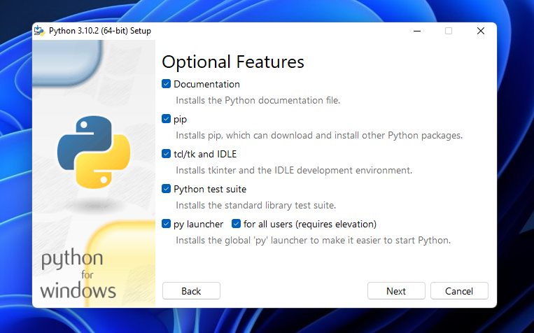
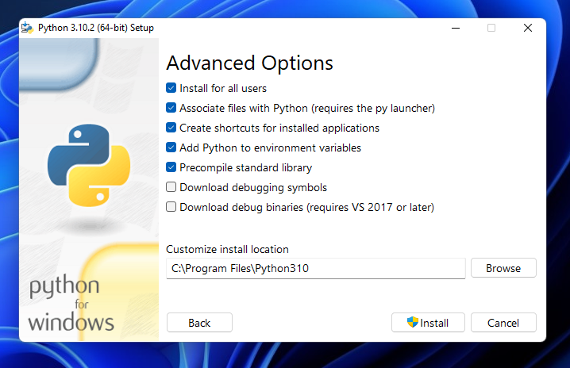
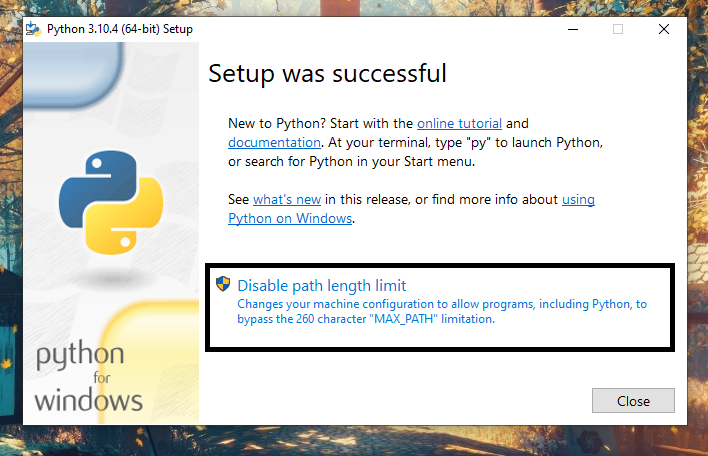

{% extends "languages/python/py_base.html" %}

{% block title %}Setting Up Python{% endblock %}

{% block topic %}
<div class="topic">
    <div class="title">Downloading Python</div>
    <div class="description-left">
        The latest version of python can be downloaded from 
        <a href="https://www.python.org/downloads/" target="_blank" rel="noopener noreferrer">here</a>.
    </div>
    
</div>

<div class="topic">
    <div class="title">Installing Python</div>
    <div class="description-left">
        <ol type="1">
            <li>
                Double click the executable file to launch the installation wizard and select <b>Customize 
                installation</b>.
                
            </li>
            <li>
                Check all the boxes then click next.
                
            </li>
            <li>
                Next, check all the boxes shown below or you can check all of them if you want and click install.
                
            </li>
            <li>
                You may be prompted with the following message, just click <b>Disable path length limit</b>.
                
            </li>
        </ol>
    </div>
</div>

<div class="topic">
    <div class="title">Check Install</div>
    <div class="description-left">
        The following command can be used in the terminal to verify the the installation and version of Python:
        <div class="code-snippet">
            python --version
        </div>
        Something similar should be returned:
        <div class="code-snippet">
            python 3.10.7
        </div>
    </div>
</div>

<div class="topic">
    <div class="title">Helpful Resources</div>
    <a class="res-link" href="https://www.python.org/downloads/" target="_blank" rel="noopener noreferrer">
        Official website of Python
    </a>
    <a class="res-link" href="https://medium.com/co-learning-lounge/how-to-download-install-python-on-windows-2021-44a707994013" target="_blank" rel="noopener noreferrer">
        Medium: Download, Setup, and Install Python on Windows[2022]
    </a>
    <a class="res-link" href="https://www.freecodecamp.org/news/how-to-install-python-in-windows-operating-system/" target="_blank" rel="noopener noreferrer">
        freecodecamp: How to Install Python on Windows
    </a>
    <a class="res-link" href="https://www.w3schools.com/python/python_getstarted.asp" target="_blank" rel="noopener noreferrer">
        w3schools: Python Getting Started
    </a>
</div>
{% endblock %}

{% block code %}
#include &#60;stdio.h&#62;

int main() {
    printf("Hello World!");
    return 0;
}
{% endblock %}

{% block output %}
Hello World!
{% endblock %}